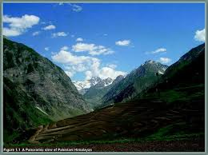
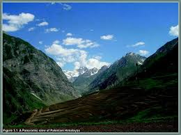

Lesser or middle himalayas
Lesser Himalayas, also called Inner Himalayas, Lower Himalayas, or Middle Himalayas,
middle section of the vast Himalayan mountain system in south-central Asia.
The Lesser Himalayas extend for some 1,550 miles (2,500 km) northwest-southeast across
the northern limit of the Indian subcontinent. Areas include the disputed Kashmir region
(Gilgit-Baltistan, administered by Pakistan, and Jammu and Kashmir union territory,
administered by India), the Indian states of Himachal Pradesh and Uttarakhand, Nepal,
the Indian state of Sikkim, and Bhutan. The range lies between the Great Himalayas to the
northeast and the Siwalik Range (Outer Himalayas) to the southeast and has an average
elevation of 12,000 to 15,000 feet (3,700 to 4,500 metres). It includes portions of the
western (Punjab), Kumaun, Nepal, and Assam Himalayas ranges.
 

related tags